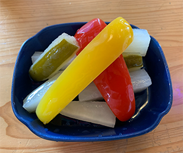
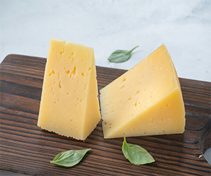
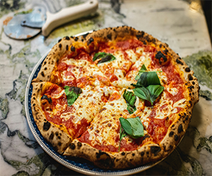

季節ごとに旬の野菜を漬けています 自家製ピクルスは酸味強めでビールの箸休めに

オランダから直輸入のゴーダチーズ チーズの濃厚さがビールの苦味に合います
スペイン産イベリコ豚 ほどよい塩気と濃厚な旨味がビールに合います
ハーブが入った大人の味 しっかりした味なのでIPAに合います
ロンドンパブの提案料理 いぶりがっこ入り自家製タルタルを添えて

トマト、チーズ、バジルのシンプルな素材 爽やかなピルスナーやラガービールに合います